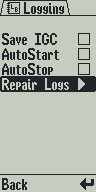
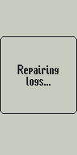
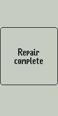
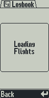
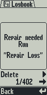
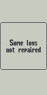
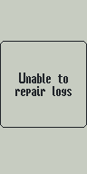
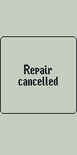

Logging settings
Repair Logs selected

Only changed/new screens. Native 96 × 192 captures rendered by the firmware in the simulator; display enlargement uses nearest-neighbor scaling. Click a screen for its native PNG.
Repair Logs selected

Manual maintenance
Recovery in progress

All affected logs recovered

Healthy logbook
Opening and paging

Confirmed invalid/incomplete log

Temporary read failure
Conflict preserved

Explicit failure

Back / center cancellation

Another storage transaction
Maintenance unavailable